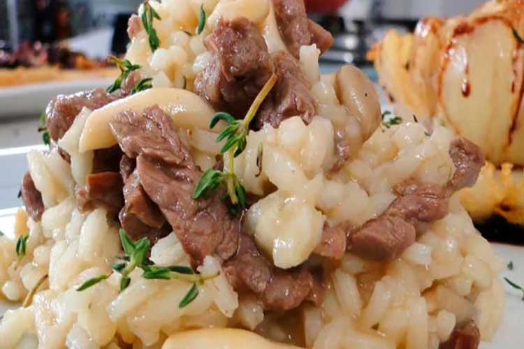
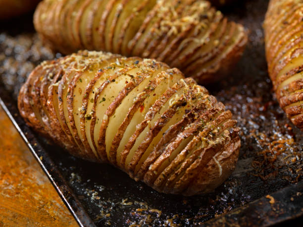
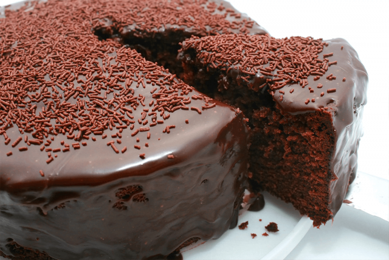

<!DOCTYPE html>
<html lang="pt-br">
<head>
    <link rel="stylesheet" href="receitas.css">
    <meta charset="UTF-8">
    <meta name="viewport" content="width=device-width, initial-scale=1.0">
    <style>
        body {
         background-color:  
#20eb6d;
     }
 </style>
    <title>Receitas da Morg</title>
    <header>
        <nav>
            <ul>
                <li><a href="home.html">Home</a></li>
                <li><a href="Receitas.html">Receitas</a></li>
                <li><a href="Cadastro.html">Cadastro</a></li>
            </ul>
        </nav>
        <div class="receitas-container"></div>
        <div class="receita-card">
    <h2 class="receita-nome">Risoto de carne</h2>
    
    <ul class="receita-ingredientes">
        <li>2 colheres de sopa de azeite extra virge</li>
        <li>1 cebola picada</li>
        <li>2 dentes de alho picados</li>
        <li>300g de carne picada</li>
        <li>1 xícara de arroz arbório</li>
        <li>1 litro de caldo de carne</li>
        <li>1 xícara de ervilhas </li>
        <li>1/2 xícara de vinho branco seco</li>
        <li>Queijo parmesão ralado a gosto</li>
        <li>Sal e pimenta do reino a gosto</li>
    </ul>
    <ol class="receita-preparo">
        <li>Refogue a carne:Em uma panela grande, aqueça o azeite e refogue a cebola e o alho até dourar. Adicione a carne moída e cozinhe até dourar por todos os lados.</li>
        <li>Adicione o arroz:Acrescente o arroz arbório à panela e refogue por mais alguns minutos, até os grãos ficarem levemente transparentes.</li>
        <li>Vinho e caldo:Adicione o vinho branco e cozinhe até evaporar quase todo o líquido. Em seguida, comece a adicionar o caldo de carne, um pouco de cada vez, mexendo sempre.</li>
        <li>Cozinhe o arroz:Continue adicionando o caldo aos poucos, mexendo sempre, até o arroz ficar cremoso e al dente.</li>
        <li>Finalização:Adicione as ervilhas congeladas e cozinhe por mais alguns minutos, até que estejam macias. Tempere com sal e pimenta do reino a gosto.</li>
        <li>Sirva o risoto imediatamente, polvilhado com queijo parmesão ralado.</li>
        <li>Caldo caseiro: Para um sabor mais intenso, utilize caldo de carne caseiro.</li>
        <li>Queijos: Experimente adicionar outros tipos de queijo, como gorgonzola ou queijo brie, para um sabor mais sofisticado.</li>
        <li>Acompanhamentos: Sirva o risoto acompanhado de uma salada verde ou um pão italiano.</li>
    </ol>
</div>
    <div class="receita-card">
        <h2 class="receita-nome">Batata Assada</h2>
        
        <ul class="receita-ingredientes">
            <li>Batatas grandes</li>
            <li>Azeite de oliva</li>
            <li>Sal e pimenta do reino a gosto</li>
            <li>Ervas frescas picadas (alecrim, tomilho, orégano) - opcional</li>
            <li>Queijo parmesão ralado (opcional)</li>
            <li>Alho picado (opcional)</li>
            <li>Dois palitos de churrasco</li>
        </ul>
        <ol class="receita-preparo">
            <li>Pré-aqueça o forno:Aqueça o forno a 200°C.</li>
            <li>Prepare as batatas:Lave bem as batatas e seque-as. Coloque cada batata entre dois palitos de churrasco, paralelos um ao outro. Isso evitará que você corte a batata completamente.</li>
            <li>Faça os cortes:Com uma faca afiada, faça cortes finos e paralelos na batata, sem cortá-la até o fim. Os cortes devem ter cerca de 2mm de distância entre si.</li>    
            <li>Tempere:Regue as batatas com azeite de oliva e tempere com sal, pimenta do reino e as ervas frescas picadas. Se desejar, adicione alho picado entre os cortes.</li>
            <li>Asse:Leve a assadeira ao forno preaquecido por cerca de 40-45 minutos, ou até as batatas estarem douradas e crocantes. Vire as batatas na metade do tempo para que assentem por igual.</li>
            <li>Finalização:Retire do forno e, se desejar, polvilhe com queijo parmesão ralado antes de servir.</li>   
        </ol>
    </div>
        <div class="receita-card">
            <h2 class="receita-nome">Bolo de chocolate</h2>
            
            <ul class="receita-ingredientes">
                <li>2 xícaras de açúcar</li>
                <li>1 xícara de óleo</li>
                <LI>3 ovos</LI>
                <li>2 xícaras de farinha de trigo</li>
                <li>1/2 xícara de chocolate em pó</li>
                <li>1 colher de sopa de fermento em pó</li>
                <li>1 xícara de água quente</li>
            </ul>
            <ol class="receita-preparo">    
                <li>Misture os ingredientes secos:Em uma tigela, misture a farinha de trigo, o chocolate em pó e o fermento. Reserve. </li>
                <li>Bata os ingredientes úmidos:Em outra tigela, bata o açúcar, os ovos e o óleo até obter um creme homogêneo.</li>
                <li>Misture as Duas Partes:Adicione os ingredientes secos aos ingredientes úmidos, alternando com a água quente. Misture delicadamente até incorporar todos os ingredientes.</li>
                <li>Cobertura:Enquanto o bolo assa, prepare uma cobertura derretendo chocolate em banho-maria ou no micro-ondas.</li>
                <li>Finalização:Retire o bolo do forno, espere amornar e cubra com a ganache de chocolate.</li>
            </ol>
        </div>
       </html> 
        <body>
            <footer>
                <p>&copy; 2024 Meu primeiro Site Cringe. Todos os direitos reservados.</p>
            </footer>
        </body>